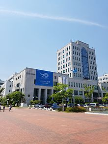

I am undergraduate student at PNU studying to be
computer programmer
I am undergraduate student at PNU studying to be
computer programmer
I am undergraduate student at PNU studying to be
computer programmer
| mon | tue | wed | thu | |
|---|---|---|---|---|
| AM | C++ | Data Structure | C++ | Data Structure |
| PM | Web Programming | Linux | Web Programming | Linux |
reference - Pusan National University

부산대학교(釜山大學校, Pusan National University)는 1946년 5월 15일에 설립된 대한민국 부산광역시 소재의 종합 국립대학교이며, 영남권을 대표하는 거점국립대학교이다. 부산광역시 금정구 장전동의 부산 캠퍼스와 서구 아미동의 아미 캠퍼스, 경상남도 밀양시 삼랑진읍 청학리의 밀양 캠퍼스, 경상남도 양산시 물금읍 범어리 양산 캠퍼스로 이루어져 있다. 1946년에 2개의 학부(인문학부, 수산학부)로 출발하여 2011년 현재 14개의 단과대학, 11개의 학부, 1개의 대학원, 5개의 전문대학원과 6개의 특수대학원을 운영하고 있다. 1946년 5월 15일에 문교부는 부산고등수산학교를 대학으로 승격시켜 종합대학의 1개 단과대학(수산학부)으로, 그와 별도로 인문계대학을 신설하여 인문계 1개 단과대학(인문학부)과 자연계 1개 단과대학(수산학부) 체제의 국립 부산대학교(종합대학) 설립을 인가하였는데, 학교의 명칭은 ‘부산대학’으로, 학부(단과대학)는 인문학부와 수산학부로 개교하였으며(이때의 학부는 오늘날의 단과대학(Faculty)에 해당하는 것으로, 1946년 3월 7일에 공포된 대학령 제2조 후단에는 인문계 및 자연계의 학부가 병설될 때는 2개 이상의 학부로써 '종합대학교'를 구성할 수 있도록 규정되어 있었다.) 그후 1946년 7월 예과 시험을 거치고, 1946년 8월에는 대학 총장으로 아서 린 베커(Arthur Lynn Becker 1879~1979, 한국명 백아덕白雅悳) 박사를 임명하여 1946년 9월 입학식을 거행하고 1년 정도 종합대학으로 운영되다가 1947년 7월 수산과대학이 '국립 부산수산대학'으로 분리됨으로써 종합대학으로써 '국립 부산대학교'은 사실상 와해되었다. 그 후 1953년 4월 1일에 국립 부산대학교 설립안이 국무회의를 통과하고, 4월 3일 국무총리의 재가를 받아 같은 해 9월15일 국립학교설치령이 공포됨에 따라 다시 종합대학으로 승격되었다. 1979년 부마민주항쟁의 중심에 있었으며 1987년 학원민주화투쟁과 전두환 정권 퇴진 운동에서도 주도적인 역할을 하였다. 2005년에 국립 대학교의 구조 조정에 따라 밀양대학교와 통합하였다. 상징 동물은 독수리로 이를 형상화한 캐릭터인 ‘산지니’가 있고 상징 색은 부산대청색과 녹색이며 교훈은 진리·자유·봉사이다. 약칭으로 부대라고 부르거나 영문 약칭 PNU로 표기하기도 한다.